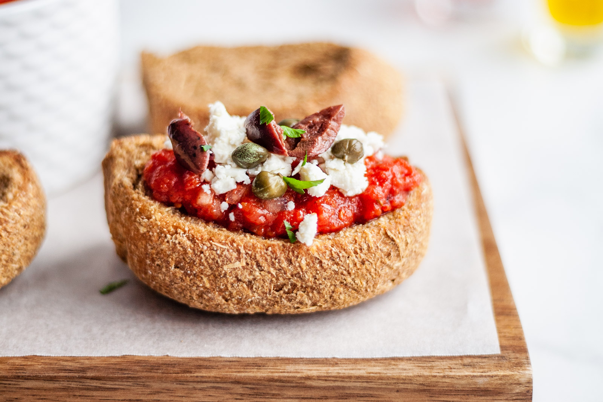

Dakos or ntakos is a traditional Cretan dish consisting of a dry barley rusk called paximadi that is topped with crumbled myzithra cheese, chopped ripe tomatoes, whole olives, capers, fresh oregano, and a few generous splashes of high-quality olive oil.
Meal prep time : 15 minutes
Servings : 4